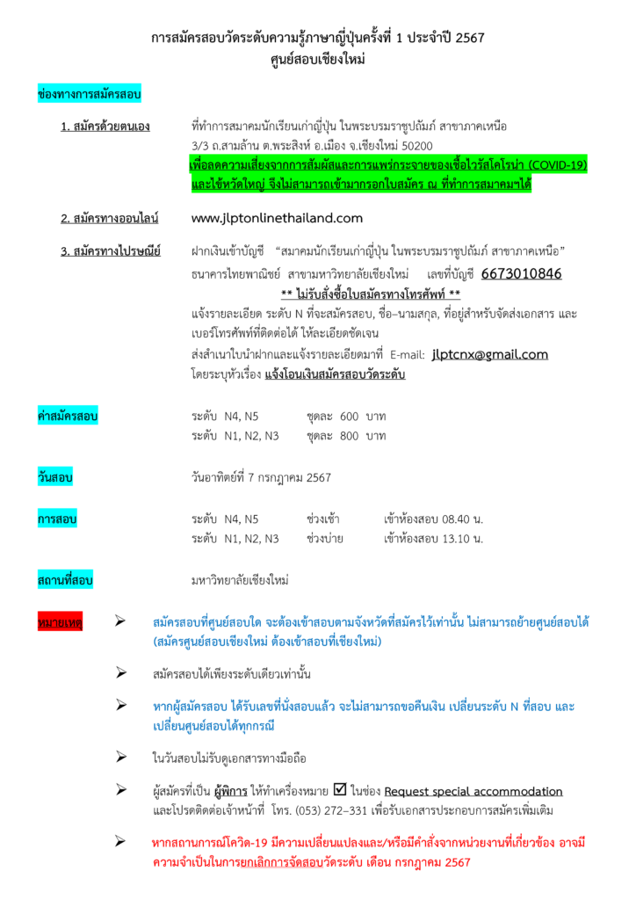
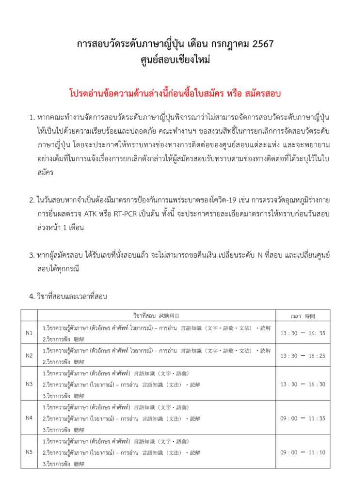
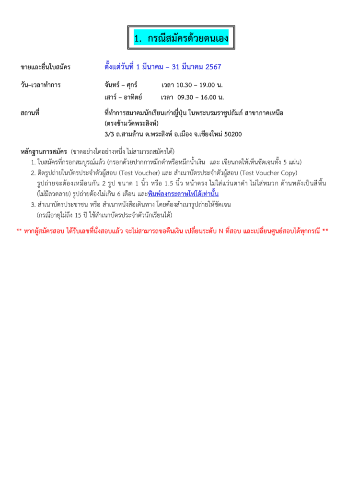
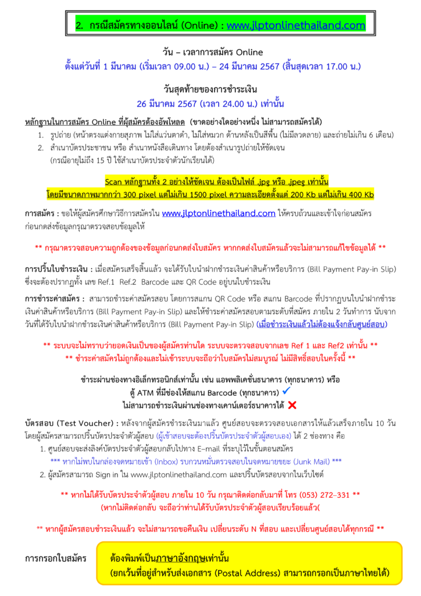
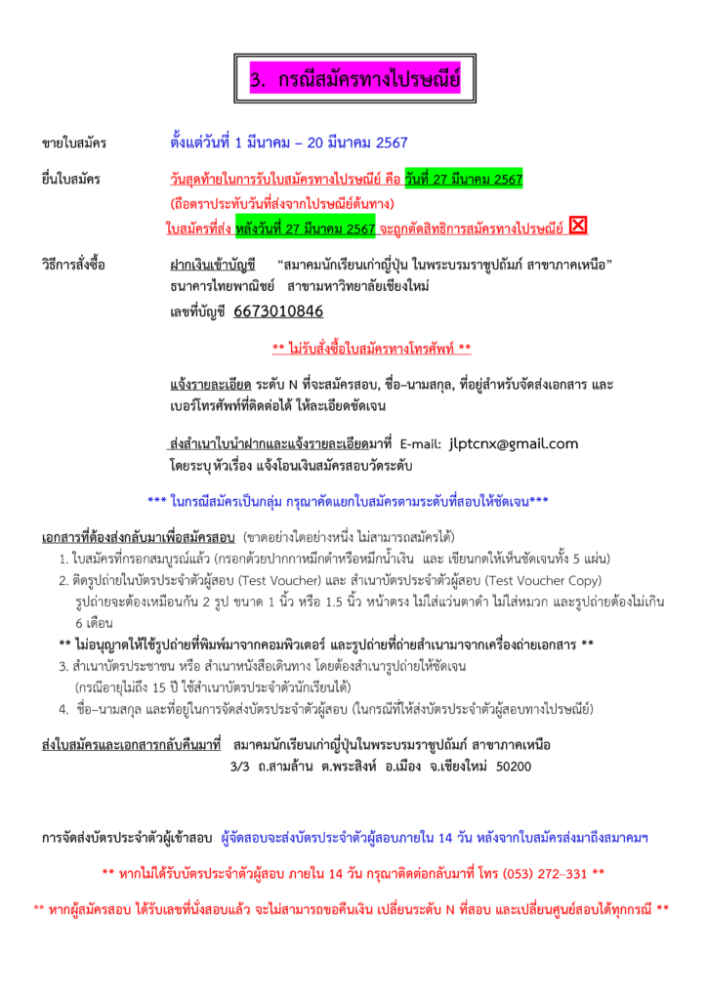
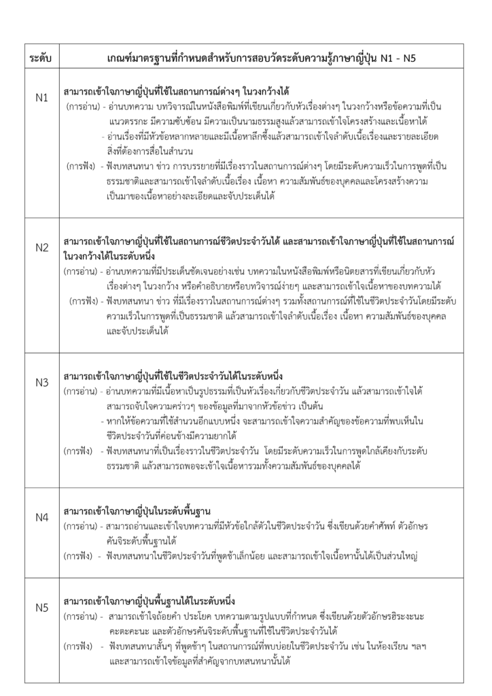

เปิดรับสมัครสอบวัดระดับความรู้ภาษาญี่ปุ่น (JLPT) ครั้งที่ 1 ประจำปี 2567 ศูนย์สอบเชียงใหม่
เนื้อหาตามประกาศ ณ วันที่เผยแพร่ โปรดตรวจสอบกำหนดการและเงื่อนไขก่อนดำเนินการ

เปิดสมัครสอบวัดระดับความรู้ภาษาญี่ปุ่น (JLPT)
ครั้งที่ 1 ประจำปี 2567 ศูนย์สอบเชียงใหม่
ช่องทางการรับสมัคร
· สมัครด้วยตนเอง ณ ที่ทำการสมาคมฯ สาขาภาคเหนือ
วัน – เวลาทำการ
จันทร์ – ศุกร์ เวลา 10.30 – 19.00 น.
เสาร์ – อาทิตย์ เวลา 9.30 – 16.00 น.
· สมัครทางออนไลน์ (Online)
https://www.jlptonlinethailand.net/
· สมัครทางไปรษณีย์
ไม่จำกัดจำนวนรับสมัคร
สถานที่สอบ มหาวิทยาลัยเชียงใหม่
วันสอบ วันอาทิตย์ที่ 7 กรกฎาคม 2567












หากมีการเปลี่ยนแปลงและ/หรือมีคำสั่งจากหน่วยงานที่เกี่ยวข้อง อาจมีความจำเป็นในการยกเลิกการจัดสอบวัดระดับภาษาญี่ปุ่น
ติดตามข่าวสารของสมาคมนักเรียนเก่าญี่ปุ่นฯ สาขาภาคเหนือได้ที่เฟซบุ๊คเพจ https://www.facebook.com/ojsatn/ และเว็บไซต์ http://ojsatn.or.th/
สอบวัดระดับภาษาญี่ปุ่น #JLPT #สมาคมนักเรียนเก่าญี่ปุ่นฯ สาขาภาคเหนือ #OJSATN #ภาษาญี่ปุ่น #Japaneselanguage